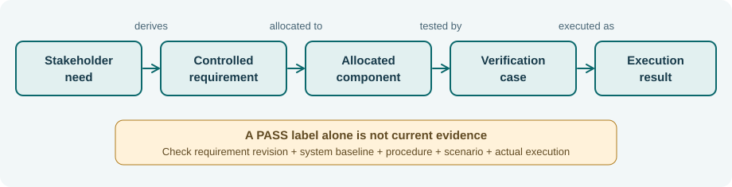
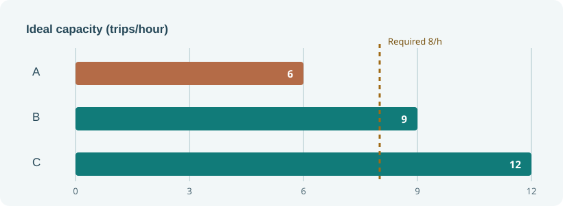

Northstar NS-MB3 — Model-based engineering study case
Book III: Introduction to Model-Based Systems Engineering (EN.645.631). This is one fictional dispatch and monitoring system analyzed consistently across twelve chapters. The model describes an engineering decision, not a certified SysML v2 model or a real-world operating system.
Open Book 3 · Book 3 contents · Editable JSON · Evidence register · Python checker
The review question
Can a campus-shuttle design support eight scheduled trips in the ideal peak hour while maintaining an authorization gate, a telemetry-freshness limit, nominal command timing, energy reserve, and duplicate-token protection? What additional evidence would be needed for a credible deployment decision?
The controlled baseline NS-MB3.1 has four stakeholder needs, six technical requirements, five allocated functions, five components, two illustrative interfaces, and six test records. Data are chosen to expose missing evidence, not to emulate real certification. No field data, conforming SysML parser output or operational approval is included.

Core quantitative results
| Model claim | Stated inputs | Result | Interpretation |
|---|---|---|---|
| Candidate A ideal capacity | 2 vehicles × 3 trips/h | 6 trips/h | Fails eight-trip necessary bound |
| Candidate B ideal capacity | 3 × 3 | 9 trips/h | Passes necessary bound; not realized throughput |
| Candidate C ideal capacity | 4 × 3 | 12 trips/h | Greater model headroom, higher cost |
| Nominal serial-path delay | 90 + 110 + 80 + 45 ms | 325 ms | 75 ms below nominal 400-ms limit |
| Degraded serial-path delay | 120 + 140 + 120 + 80 ms | 460 ms | 60 ms above nominal number; requires scoped degraded rule |
| Shift energy | 24 × (1.8 km × 0.36 kWh/km + 0.20 kWh) | 20.352 kWh | 9.648 kWh below illustrative 30-kWh limit |

Controlled verification example
TEST-03 says PASS for REQ-03@1, but REQ-03 is now at revision 2. Its evidence is stale. TEST-06 is PLANNED, so there is no passing execution for the duplicate-token requirement. Four other requirements have a current linked teaching fixture, not physical verification. A correct reviewer must not count all six as successfully verified.
Run from the repository root:
python3 SE/K/B3/tools/step03_book3_model_check.py
The checker validates only this JSON teaching schema (identities, allocations, interfaces, test revision labels, and arithmetic). It does not parse SysML v1 or v2, prove safety or perform real-world measurement. Consult the official OMG SysML v2 language specification for normative language semantics and the ISO/IEC/IEEE 42010:2022 overview for architecture descriptions.
Chapter-by-chapter use
| Chapter | Engineering question | Artifact or test |
|---|---|---|
| 1 | Why pay for a model? | Hypothetical break-even analysis and capacity contradiction |
| 2 | What is controlled, in which tool? | Baseline schema, stable IDs and model-change transaction |
| 3 | What do stakeholders actually need? | Needs, scenarios and system context |
| 4 | What do model relations mean? | Allocations, test links and evidence currency |
| 5 | Which behaviors are forbidden? | Dispatch-token safety invariant and concurrency counterexample |
| 6 | What constitutes an interface? | Position age and serial command latency budgets |
| 7 | Can logical functions be allocated safely? | Function-to-component mapping and fault boundary |
| 8 | Are quantitative constraints physically possible? | Energy conservation and sensitivity |
| 9 | Which physical candidate is defensible? | Feasibility filter and cost/capacity trade |
| 10 | What counts as verification evidence? | Synthetic test register and revision predicate |
| 11 | Can errors be queried automatically? | Typed references and negative fixtures |
| 12 | What can be approved? | Conditional review decision and evidence gaps |
Review boundary and exercises
The strongest conclusion supported by this baseline is continue detailed design and evidence collection for candidate B, withholding operational authorization. Alter a copy of the JSON to remove a component, change a test revision, or raise demand; rerun the checker and explain which diagnostics are structural, which are numerical, and which remain matters for expert judgment. Do not modify the original fixture to conceal open requirements.